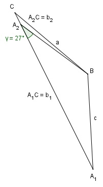

Aufgabe 136 Berechnen Sie die Seite b, wenn a = 322,6 m, c = 283,7 m und γ = 27°.

Es liegt der Fall SSW (Seite c, Seite a, Winkel γ) vor. Der Fall hat hier 2 Lösungen, weil der Winkel γ der kleineren Seite c gegenüberliegt. Sinussatz: c a ------- = ------- |*sin α sin γ sin α c * sin α ---------- = a |*sin γ sin γ c * sin α = a * sin γ |:c a * sin γ 322,6 m * sin 27° sin α = ----------- = ------------------- = c 283,7 m 322,6 m * 0,454 = ------------------ = 0,5163 --> α1 = 31,1° α2 = 180° - 31,1° = 148,9° β1 = 180° - α1 – γ = 180° - 31,1° - 27° = 121,9° β2 = 180° - α2 – γ = 180° - 148,9° - 27° = 4,1° Sinussatz: b1 c ------- = ------- |*sin β1 sin β1 sin γ c * sin β1 283,7 m * sin 121,9° b11 = ------------ = ---------------------- = sin γ sin 27° 283,7 m * 0,849 = ------------------ = 530,5 m 0,454 b2 c ------- = ------- |*sin β2 sin β2 sin γ c * sin β2 283,7 m * sin 4,1° b22 = ------------ = -------------------- = sin γ sin 27° 283,7 m * 0,0715 = ------------------ = 44,7 m 0,454